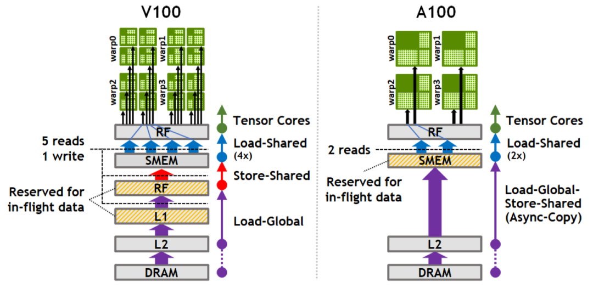

sequenceDiagram
autonumber
participant Stage0 as SMem Stage 0
participant Stage1 as SMem Stage 1
participant MMA as Tensor Core 计算
Note over Stage0,MMA: 异步多阶段双缓冲/多缓冲流水
Stage0->>Stage0: 异步加载第 k 步数据 (cp.async)
Stage0->>MMA: 读取第 k 步数据并执行矩阵乘
Stage1->>Stage1: 同时异步预取第 k+1 步数据
MMA-->>Stage0: 计算完毕释放 Stage 0
Stage1->>MMA: 立即计算第 k+1 步，计算完全隐藏数据传输
第 6 课：Shared Memory 布局与异步流水
参考答案版：包含完整代码实现与问答题深度参考解析。建议先独立完成练习题后再展开核对。
本课目标与完成标准
学完后你应能：安排 global→shared→register 多 stage 流水，并解释 fence/wait/barrier 的正确顺序。
通过必须同时满足：
- 独立补齐本课唯一的代码填空题，并通过给定检查；
- 三个问答题均说明因果链，而不是只报术语；
- 能指出至少一个正确性边界和一个性能取舍；
- 总分不低于 8/10，且没有一票否决级概念错误。
前置关系
- 课程前置：CUDA 线程模型、GEMM、C++ 模板基础
- 本课在路线中的作用：GEMM mainloop 用 shared memory 缓冲 A/B tile；多 stage 让下一 tile 的加载与当前 tile 的 MMA 重叠。
核心心智模型
核心操作与执行流程图解

图 6-1：cp.async 异步拷贝原理（图源自 NVIDIA Ampere 白皮书）
图 6-2：Ampere/Hopper 多级异步环形流水线（Circular Pipeline）执行流
1. 它是什么，解决什么问题
多阶段共享内存异步流水线（Multi-Stage Shared Memory Asynchronous Pipeline） 是现代 GPU（Ampere、Ada、Hopper）彻底打破“冯·诺依曼访存墙”、实现 Tensor Core 极限算力满载的核心生命线。
传统同步 GEMM 的停滞危机 vs. 异步环形流水（结合图 6-1 与图 6-2）： - 串行等待的算力暴跌：在早期 GPU 编程中，循环遵循“读取 Tile \(\to\) 同步等待 \(\to\) MMA 矩阵乘 \(\to\) 同步等待”的串行模式。由于全局显存（HBM）的访问延迟高达 200~400 个时钟周期，计算单元在等待显存数据的漫长周期内完全处于冻结饥饿状态，硬件算力利用率极低； - 异步拷贝引擎（cp.async，图 6-1）：Ampere 引入了硬件级异步拷贝引擎。它允许线程仅发射拷贝指令，由显存控制器后台直接将 HBM 数据写入片上 Shared Memory，全程彻底绕过通用寄存器（Zero Register Overhead）； - 环形流水线（Circular Buffer Pipeline，图 6-2）：将共享内存划分为 \(S\) 个环形阶段（Stages）。在当前时钟周期计算 Stage \(k\) 的同时，硬件已在后台并行预取 Stage \(k+1, \dots, k+S-1\) 的数据，使显存传输延迟被计算时间完全掩盖。
2. 它如何工作（结合图 6-1 与图 6-2）
CUTLASS 主循环采用标准的三阶段异步软件流水（Software Pipelining）： 1. 序幕预取阶段（Prologue / Pipeline Fill）： - 在进入计算主循环之前，线程连续向硬件下发 \(S-1\) 个 Tile 的全局加载请求，分别填入 Shared Memory 的 Stage \(0 \dots S-2\)； - 每轮预取通过 cp.async.commit_group 绑定为一个独立的硬件事务组（Group）； 2. 稳态循环流水阶段（Steady-State Mainloop）： - 等待就绪：调用 cp.async.wait_group<S-2>。硬件仅阻塞等待最老的一个 Stage 加载完成，其余后续 Stage 仍在后台异步传输； - 可见性屏障：执行 __syncthreads() 或异步事务栅障（mbarrier.try_wait），确保该 Stage 物理数据对当前 Block 全体线程完全可见； - 预取下一轮：调用 cp.async 发射第 \(k + S - 1\) 步的数据搬运，写入环形缓冲区的下一个空闲槽位，调用 commit_group； - 重叠计算：将当前已就绪的 Stage \(k\) 数据读入寄存器，全速发射 Tensor Core MMA 计算指令。数据传输与矩阵乘加在硅片上完全物理并发！ 3. 尾声收口阶段（Epilogue / Pipeline Drain）： - \(K\) 维数据全部加载完毕后，依次等待并清空环形缓冲区中残留的最后几个 Stage，累加出最终完整的输出矩阵。
3. 正确性条件与常见误区
- 写后读（RAW）与读后写（WAR）双向冒险：
- RAW 冒险：未等待
cp.async事务组完成就强行读取 Shared Memory，会读出未初始化的显存随机脏数据； - WAR 冒险：在当前 Stage 的 MMA 计算完全结束之前，过早发起新的
cp.async覆写该阶段内存，会导致计算中的线程读到未来时刻的新数据；
- RAW 冒险：未等待
- 栅障作用域的聚合一致性：
- 栅障指令必须在整个 CTA 范围内严格对齐。绝不能在存在线程分流的分支语句内部调用同步，否则会导致硬件屏障计数器永久无法归零而死锁。
4. 性能与工程取舍（流水级数与 Occupancy 权衡）
- 最小流水级数（Minimum Stages）的物理推导：
- 设全局内存加载延迟为 \(T_{\text{copy}}\)（通常约为 300 cycles），单个 Tile 的 Tensor Core 计算耗时为 \(T_{\text{compute}}\)；
- 若要完全隐藏显存加载延迟，在流水线中并发飞行的预取批次必须满足： \[\text{In-flight Stages} \ge \left\lceil \frac{T_{\text{copy}}}{T_{\text{compute}}} \right\rceil\]
- 加上当前正在被 MMA 计算占用的 1 个 Stage，实现零气泡流水所需的总阶段数为： \[S_{\text{min}} = \left\lceil \frac{T_{\text{copy}}}{T_{\text{compute}}} \right\rceil + 1\]
- Stage 激增带来的“Occupancy 坍塌”陷阱：
- 共享内存总消耗量随 Stage 数呈线性严格增长：\(\text{SMEM} = S \times (\text{Size}_A + \text{Size}_B) \times \text{sizeof}(T)\)；
- 若从 2-stage 盲目增加到 5-stage，单 Block 的 SMEM 占用可能从 40 KB 暴涨至 100 KB。单个 SM 允许驻留的活跃 Block 数量可能从 4 个骤降至 1 个；
- 当 SM 仅剩 1 个活跃 Block 时，一旦遭遇任何未预期的 Cache Miss，Warp 调度器将失去任何备用线程束来掩盖延迟，算子整体耗时反而成倍恶化！
具体演示：流水线阶段配比与延迟掩盖演算
设某 GPU 体系下，一个 Tile 的全局显存拷贝延迟 \(T_{\text{copy}} = 300\text{ 周期}\)，单个 Tile 的 Tensor Core MMA 运算时间 \(T_{\text{compute}} = 120\text{ 周期}\)： - 流水级数测算： \[\left\lceil \frac{300}{120} \right\rceil = \lceil 2.5 \rceil = 3 \text{ 个预取阶段}\] 加上当前正在参与计算的 1 个阶段，最低所需总阶段数为： \[S = 3 + 1 = 4 \text{ Stages}\] - 稳态执行微观时序图： - 周期 0 ~ 120：MMA 计算 Stage 0；硬件在后台同时传输 Stage 1（进度 120/300）、Stage 2（进度 0/300）、Stage 3（新发射）； - 周期 120 ~ 240：MMA 计算 Stage 1；硬件后台传输 Stage 2、Stage 3、Stage 4； - 周期 240 ~ 360：MMA 计算 Stage 2； - 因果结论：只要始终维持 4 个 Stage 环形流转，每次 MMA 计算完成时，下一个 Stage 的数据都恰好已经在片上 Shared Memory 准备就绪，计算引擎实现 100% 无气泡满载运行。
实践任务：唯一代码填空题
补齐覆盖 copy 延迟所需的最小 stage 数（包含正在计算的一 stage）。
规则：只能修改 TODO/______ 所在位置；不要删除断言或放宽误差。代码注释说明了每个边界条件。
Code
def minimum_stages(copy_cycles, compute_cycles):
"""两个参数必须为正整数。"""
# TODO：只补齐下面这个表达式。
return ______
assert minimum_stages(300,120) == 4
assert minimum_stages(120,120) == 2
assert minimum_stages(1,120) == 2检查方法
运行本单元格；所有 assert 必须通过。另手工构造一个边界输入，解释预期结果。
提交时请给出：补齐后的代码、实际运行输出（环境不可用时注明“仅静态审查”）以及对失败用例的解释。
Q1
不要背定义：请从输入、状态变化和输出三个阶段解释“Shared Memory 布局与异步流水”的工作机制。
你的答案：
Q2
只增加 stage 数而不检查 shared-memory occupancy，为什么可能变慢？
你的答案：
Q3
在 profiler 中看到 memory dependency stalls，如何区分 stage 不足与访存不合并？
你的答案：
评分与通过规则
- 代码 4 分：正常输入 2 分，边界输入 1 分，解释实现 1 分；
- Q1～Q3 各 2 分；
- 一票否决：结果碰巧正确但核心因果链错误、删除边界检查、把未运行结果说成实测。
需要提示时按四级机制请求：概念区域 → 具体方向 → 关键局部 → 完整答案。